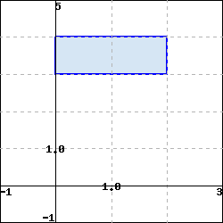
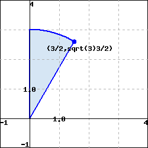
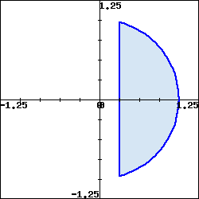

What are the polar coordinates of a point in two-space?
How do we convert between polar coordinates and rectangular coordinates?
What is the area element in polar coordinates?
How do we convert a double integral in rectangular coordinates to a double integral in polar coordinates?
While we have naturally defined double integrals in the rectangular coordinate system, starting with domains that are rectangular regions, there are many of these integrals that are difficult, if not impossible, to evaluate. For example, consider the domain \(D\) that is the unit circle and \(f(x,y) = e^{-x^2 - y^2}\text{.}\) To integrate \(f\) over \(D\text{,}\) we would use the iterated integral
For this particular integral, regardless of the order of integration, we are unable to find an antiderivative of the integrand; in addition, even if we were able to find an antiderivative, the inner limits of integration involve relatively complicated functions.
It is useful, therefore, to be able to translate to other coordinate systems where the limits of integration and evaluation of the involved integrals is simpler. In this section we provide a quick discussion of one such system — polar coordinates — and then introduce and investigate their ramifications for double integrals. The rectangular coordinate system allows us to consider domains and graphs relative to a rectangular grid. The polar coordinate system is an alternate coordinate system that allows us to consider domains less suited to rectangular coordinates, such as circles.
Preview Activity12.5.1.
The coordinates of a point determine its location. In particular, the rectangular coordinates of a point \(P\) are given by an ordered pair \((x,y)\text{,}\) where \(x\) is the (signed) distance the point lies from the \(y\)-axis to \(P\) and \(y\) is the (signed) distance the point lies from the \(x\)-axis to \(P\text{.}\) In polar coordinates, we locate the point by considering the distance the point lies from the origin, \(O = (0,0)\text{,}\) and the angle the line segment from the origin to \(P\) forms with the positive \(x\)-axis.
Determine the rectangular coordinates of the following points:
The point \(P\) that lies 1 unit from the origin on the positive \(x\)-axis.
The point \(Q\) that lies 2 units from the origin and such that \(\overline{OQ}\) makes an angle of \(\frac{\pi}{2}\) with the positive \(x\)-axis.
The point \(R\) that lies 3 units from the origin such that \(\overline{OR}\) makes an angle of \(\frac{2\pi}{3}\) with the positive \(x\)-axis.
Part (a) indicates that the two pieces of information completely determine the location of a point: either the traditional \((x,y)\) coordinates, or alternately, the distance \(r\) from the point to the origin along with the angle \(\theta\) that the line through the origin and the point makes with the positive \(x\)-axis. We write “\((r, \theta)\)” to denote the point’s location in its polar coordinate representation. Find polar coordinates for the points with the given rectangular coordinates.
\((0,-1)\) ii. \((-2,0)\) iii. \((-1,1)\)
For each of the following points whose coordinates are given in polar form, determine the rectangular coordinates of the point.
\((5, \frac{\pi}{4})\) ii. \((2, \frac{5\pi}{6})\) iii. \((\sqrt{3}, \frac{5\pi}{3})\)
Solution.
Determine the rectangular coordinates of the following points:
This point has \(y\) coordinate 0, so the \(x\) coordinate must be 1 and the point is \((1,0)\text{.}\)
The angle of \(\frac{\pi}{2}\) with the positive \(x\)-axis places the point on the \(y\)-axis. The point on the \(y\)-axis a distance 2 from the origin is the point \((0,2)\text{.}\)
Draw a right triangle from the origin to \(R\) to the point on the \(x\)-axis below \(R\text{.}\) The acute angle at the origin has measure \(\frac{\pi}{3}\text{.}\) So \(x = 3\cos\left(\frac{2\pi}{3}\right) = -\frac{3}{2}\) and \(y = 3\sin\left(\frac{2\pi}{3}\right) = \frac{3\sqrt{3}}{2}\text{.}\) So this point has rectangular coordinates \(\left(-\frac{3}{2}, \frac{3\sqrt{3}}{2}\right)\text{.}\)
Part (a) indicates that the two pieces of information completely determine the location of a point: either the traditional \((x,y)\) coordinates, or alternately, the distance \(r\) from the point to the origin along with the angle \(\theta\) that the line through the origin and the point makes with the positive \(x\)-axis. We write “\((r, \theta)\)” to denote the point’s location in its polar coordinate representation. Find polar coordinates for the points with the given rectangular coordinates.
The distance from the point with rectangular coordinates \((0,-1)\) to the origin is 1, and the angle the line through the origin and this point makes with the positive \(x\)-axis is \(\frac{\pi}{2}\text{,}\) so the polar coordinate representation of this point is \(\left(1,\frac{\pi}{2}\right)\text{.}\)
The distance from the point with rectangular coordinates \((-2,0)\) to the origin is 2, and the angle the line through the origin and this point makes with the positive \(x\)-axis is \(\pi\text{,}\) so the polar coordinate representation of this point is \((2,\pi)\text{.}\)
The distance from the point with rectangular coordinates \((-1,1)\) to the origin is \(\sqrt{2}\text{,}\) and the angle the line through the origin and this point makes with the positive \(x\)-axis is \(\frac{3\pi}{4}\text{,}\) so the polar coordinate representation of this point is \(\left(\sqrt{2},\frac{3\pi}{4}\right)\text{.}\)
For each of the following points whose coordinates are given in polar form, determine the rectangular coordinates of the point.
The rectangular coordinates are \(x = 5 \cos\left(\frac{\pi}{4}\right) = \frac{5\sqrt{2}}{2}\) and \(y = 5 \sin\left(\frac{\pi}{4}\right) = \frac{5\sqrt{2}}{2}\text{.}\)
The rectangular coordinates are \(x = 2 \cos\left(\frac{5\pi}{6}\right) = -\sqrt{3}\) and \(y = 2 \sin\left(\frac{5\pi}{6}\right) = 1\text{.}\)
The rectangular coordinates are \(x = \sqrt{3} \cos\left(\frac{5\pi}{3}\right) = \frac{\sqrt{3}}{2}\) and \(y = \sqrt{3} \sin\left(\frac{5\pi}{3}\right) = -\frac{3}{2}\text{.}\)
Subsection12.5.1Polar Coordinates
The rectangular coordinate system is best suited for graphs and regions that are naturally considered over a rectangular grid. The polar coordinate system is an alternative that offers good options for functions and domains that have more circular characteristics. A point \(P\) in rectangular coordinates that is described by an ordered pair \((x,y)\text{,}\) where \(x\) is the displacement from \(P\) to the \(y\)-axis and \(y\) is the displacement from \(P\) to the \(x\)-axis, as seen in Preview Activity 12.5.1, can also be described with polar coordinates \((r,\theta)\text{,}\) where \(r\) is the distance from \(P\) to the origin and \(\theta\) is the angle formed by the line segment \(\overline{OP}\) and the positive \(x\)-axis, as shown at left in Figure 12.5.1.
Figure12.5.1.The polar coordinates of a point and the polar coordinate grid.
Trigonometry and the Pythagorean Theorem allow for straightforward conversion from rectangular to polar, and vice versa.
Converting between rectangular and polar coordinates.
Converting from rectangular to polar..
If we are given the rectangular coordinates \((x,y)\) of a point \(P\text{,}\) then the polar coordinates \((r,\theta)\) of \(P\) satisfy
\begin{equation*}
r = \sqrt{x^2+y^2} \ \ \ \ \ \text{ and } \ \ \ \ \ \tan(\theta) = \frac{y}{x}, \text{ assuming } x \neq 0.
\end{equation*}
Converting from polar to rectangular..
If we are given the polar coordinates \((r,\theta)\) of a point \(P\text{,}\) then the rectangular coordinates \((x,y)\) of \(P\) satisfy
\begin{equation*}
x = r\cos(\theta) \ \ \ \ \ \text{ and } \ \ \ \ \ y = r\sin(\theta).
\end{equation*}
Note: The angle \(\theta\) in the polar coordinates of a point is not unique. We could replace \(\theta\) with \(\theta + 2 \pi\) and still be at the same terminal point. In addition, the sign of \(\tan(\theta)\) does not uniquely determine the quadrant in which \(\theta\) lies, so we have to determine the value of \(\theta\) from the location of the point. In other words, more care has to be paid when using polar coordinates than rectangular coordinates.
We can draw graphs of curves in polar coordinates in a similar way to how we do in rectangular coordinates. However, when plotting in polar coordinates, we use a grid that considers changes in angles and changes in distance from the origin. In particular, the angles \(\theta\) and distances \(r\) partition the plane into small wedges as shown at right in Figure 12.5.1.
Activity12.5.2.
Most polar graphing devices can plot curves in polar coordinates of the form \(r = f(\theta)\text{.}\) Use such a device to complete this activity.
Before plotting the polar curve \(r=1\) (where \(\theta\) can have any value), think about what shape it should have, in light of how \(r\) is connected to \(x\) and \(y\text{.}\) Then use appropriate technology to draw the graph and test your intuition.
The equation \(\theta = 1\) does not define \(r\) as a function of \(\theta\text{,}\) so we can’t graph this equation on many polar plotters. What do you think the graph of the polar curve \(\theta = 1\) looks like? Why?
Before plotting the polar curve \(r = \theta\text{,}\) what do you think the graph looks like? Why? Use technology to plot the curve and compare your intuition.
What does the region defined by \(1 \leq r \leq 3\) (where \(\theta\) can have any value) look like? (Hint: Compare to your response from part (a).)
What does the region defined by \(1 \leq r \leq 3\) and \(\pi/4 \leq \theta \leq \pi/2\) look like?
Consider the curve \(r = \sin(\theta)\text{.}\) For some values of \(\theta\) we will have \(r \lt 0\text{.}\) In these situations, we plot the point \((r,\theta)\) as \((|r|, \theta+\pi)\) (in other words, when \(r \lt 0\text{,}\) we reflect the point through the origin). With that in mind, what do you think the graph of \(r = \sin(\theta)\) looks like? Plot this curve using technology and compare to your intuition.
Solution.
Since \(r\) represents a distance from the origin, any curve with a constant value of \(r\) should be a circle, centered at the origin, with radius \(r\text{.}\)
The set of points with a constant value of \(\theta\) all make the same angle with the positive \(x\)-axis. This set of points should then form a line through the origin making an angle \(\theta\) with the positive \(x\)-axis.
As \(\theta\) increases, so does the value of \(r\text{.}\) Thus, as the point \((r,r)\) rotates around the origin, its distance from the origin also increases in a uniform manner. The set of these points should be a spiral, spiraling away from the origin as it rotates counterclockwise around the origin.
As \(\theta\) increases, the values of \(r\) will oscillate between \(-1\) and \(1\text{.}\) When \(r\) is negative, we reflect around the origin. So the resulting curve should look like a circle in the first and second quadrants. Note that \(r=\sin(\theta)\) can also be represented as \(r^2 = r\sin(\theta)\text{.}\) So in rectangular coordinates the curve \(r=\sin(\theta)\) has equation \(x^2+y^2 = y\text{,}\) or \(x^2 + \left(y-\frac{1}{2}\right)^2 = \frac{1}{4}\text{.}\) This is a circle centered at \(\left(0,\frac{1}{2}\right)\) with radius \(\frac{1}{2}\text{.}\)
Subsection12.5.2Integrating in Polar Coordinates
Consider the double integral
\begin{equation*}
\iint_D e^{x^2+y^2} \, dA,
\end{equation*}
where \(D\) is the unit disk. While we cannot directly evaluate this integral in rectangular coordinates, a change to polar coordinates will convert it to one we can easily evaluate.
We have seen how to evaluate a double integral \(\displaystyle \iint_D f(x,y) \, dA\) as an iterated integral of the form
\begin{equation*}
\int_a^b \int_{g_1(x)}^{g_2(x)} f(x,y) \, dy \, dx
\end{equation*}
in rectangular coordinates, because we know that \(dA = dy \, dx\) in rectangular coordinates. To make the change to polar coordinates, we not only need to represent the variables \(x\) and \(y\) in polar coordinates, but we also must understand how to write the area element, \(dA\text{,}\) in polar coordinates. That is, we must determine how the area element \(dA\) can be written in terms of \(dr\) and \(d\theta\) in the context of polar coordinates. We address this question in the following activity.
Figure12.5.2.Left: A polar rectangle. Right: An annulus.
Activity12.5.3.
Consider a polar rectangle \(R\text{,}\) with \(r\) between \(r_i\) and \(r_{i+1}\) and \(\theta\) between \(\theta_j\) and \(\theta_{j+1}\) as shown at left in Figure 12.5.2. Let \(\Delta r = r_{i+1}-r_i\) and \(\Delta \theta = \theta_{j+1}-\theta_j\text{.}\) Let \(\Delta A\) be the area of this region.
Explain why the area \(\Delta A\) in polar coordinates is not \(\Delta r \, \Delta \theta\text{.}\)
Now find \(\Delta A\) by the following steps:
Find the area of the annulus (the washer-like region) between \(r_i\) and \(r_{i+1}\text{,}\) as shown at right in Figure 12.5.2. This area will be in terms of \(r_i\) and \(r_{i+1}\text{.}\)
Observe that the region \(R\) is only a portion of the annulus, so the area \(\Delta A\) of \(R\) is only a fraction of the area of the annulus. For instance, if \(\theta_{i+1} - \theta_i\) were \(\frac{\pi}{4}\text{,}\) then the resulting wedge would be
of the entire annulus. In this more general context, using the wedge between the two noted angles, what fraction of the area of the annulus is the area \(\Delta A\text{?}\)
Write an expression for \(\Delta A\) in terms of \(r_i\text{,}\)\(r_{i+1}\text{,}\)\(\theta_j\text{,}\) and \(\theta_{j+1}\text{.}\)
Finally, write the area \(\Delta A\) in terms of \(r_i\text{,}\)\(r_{i+1}\text{,}\)\(\Delta r\text{,}\) and \(\Delta \theta\text{,}\) where each quantity appears only once in the expression. (Hint: Think about how to factor a difference of squares.)
As we take the limit as \(\Delta r\) and \(\Delta \theta\) go to 0, \(\Delta r\) becomes \(dr\text{,}\)\(\Delta \theta\) becomes \(d \theta\text{,}\) and \(\Delta A\) becomes \(dA\text{,}\) the area element. Using your work in (iv), write \(dA\) in terms of \(r\text{,}\)\(dr\text{,}\) and \(d \theta\text{.}\)
Solution.
The quantity \(\Delta r \, \Delta \theta\) would be the area of a rectangle with side lengths \(\Delta r\) and \(\Delta \theta\text{.}\) The area \(\Delta A\) of the polar region is the area of a slice of a washer, not a rectangle — the sides are not all straight.
Now find \(\Delta A\) by following these steps.
The area of the annulus between \(r_i\) and \(r_{i+1}\) is the area of the disk with larger radius \(r_{i+1}\) minus the area of the disk with smaller radius \(r_{i}\text{.}\) So the area of the annulus is \(\pi r^2_{i+1} - \pi r^2_{i}\text{.}\)
Our region \(R\) is the portion of the annulus between \(\theta_{i}\) and \(\theta_{i+1}\text{.}\) So the angle that cuts the region \(R\) from the annulus has measure \(\Delta \theta = \theta_{i+1} - \theta_{i}\text{.}\) Since the central angle of the entire annulus is \(2 \pi\text{,}\) the area of the region \(R\) is the fractional portion \(\frac{\Delta \theta}{2 \pi}\) of the whole annulus.
The fractional portion \(\frac{\Delta \theta}{2 \pi}\) of the area of the whole annulus is
Taking the limit as \(\Delta r\) and \(\Delta \theta\) go to 0, both \(r_{i+1}\) and \(r_i\) approach the same value \(r\text{,}\) so
\begin{equation*}
dA = \frac{1}{2}(r+r) \, dr \, d \theta = r \, dr \, d \theta\text{.}
\end{equation*}
From the result of Activity 12.5.3, we see when we convert an integral from rectangular coordinates to polar coordinates, we must not only convert \(x\) and \(y\) to being in terms of \(r\) and \(\theta\text{,}\) but we also have to change the area element to \(dA = r \, dr \, d\theta\) in polar coordinates. As we saw in Activity 12.5.3, the reason the additional factor of \(r\) in the polar area element is due to the fact that in polar coordinates, the cross sectional area element increases as \(r\) increases, while the cross sectional area element in rectangular coordinates is constant. So, given a double integral \(\iint_D f(x,y) \, dA\) in rectangular coordinates, to write a corresponding iterated integral in polar coordinates, we replace \(x\) with \(r \cos(\theta)\text{,}\)\(y\) with \(r \sin(\theta)\) and \(dA\) with \(r \, dr \, d\theta\text{.}\) Of course, we need to describe the region \(D\) in polar coordinates as well. To summarize:
Double integrals in polar coordinates.
The double integral \(\iint_D f(x,y) \, dA\) in rectangular coordinates can be converted to a double integral in polar coordinates as \(\iint_D f(r\cos(\theta), r\sin(\theta)) \, r \, dr \, d\theta\text{.}\)
Example12.5.3.
Let \(f(x,y) = e^{x^2+y^2}\) on the disk \(D = \{(x,y) : x^2 + y^2 \leq 1\}\text{.}\) We will evaluate \(\iint_D f(x,y) \, dA\text{.}\)
In rectangular coordinates the double integral \(\iint_D f(x,y) \, dA\) can be written as the iterated integral
\begin{equation*}
\iint_D f(x,y) \, dA = \int_{x=-1}^{x=1} \int_{y=-\sqrt{1-x^2}}^{y=\sqrt{1-x^2}} e^{x^2+y^2} \, dy \, dx.
\end{equation*}
We cannot evaluate this iterated integral, because \(e^{x^2 + y^2}\) does not have an elementary antiderivative with respect to either \(x\) or \(y\text{.}\) However, since \(r^2=x^2+y^2\) and the region \(D\) is circular, it is natural to wonder whether converting to polar coordinates will allow us to evaluate the new integral. To do so, we replace \(x\) with \(r \cos(\theta)\text{,}\)\(y\) with \(r \sin(\theta)\text{,}\) and \(dy \, dx\) with \(r \, dr \, d\theta\) to obtain
\begin{equation*}
\iint_D f(x,y) \, dA = \iint_D e^{r^2} \, r \, dr \, d\theta.
\end{equation*}
The disc \(D\) is described in polar coordinates by the constraints \(0 \leq r \leq 1\) and \(0 \leq \theta \leq 2\pi\text{.}\) Therefore, it follows that
\begin{equation*}
\iint_D e^{r^2} \, r \, dr \, d\theta = \int_{\theta=0}^{\theta = 2\pi} \int_{r=0}^{r=1} e^{r^2} \, r \, dr \, d\theta.
\end{equation*}
We can evaluate the resulting iterated polar integral as follows:
While there is no firm rule for when polar coordinates can or should be used, they are a natural alternative anytime the domain of integration may be expressed simply in polar form, and/or when the integrand involves expressions such as \(\sqrt{x^2 + y^2}.\)
Activity12.5.4.
Let \(f(x,y) = x+y\) and \(D = \{(x,y) : x^2 + y^2 \leq 4\}\text{.}\)
Sketch the region \(D\) and then write the double integral of \(f\) over \(D\) as an iterated integral in rectangular coordinates.
Write the double integral of \(f\) over \(D\) as an iterated integral in polar coordinates.
Evaluate one of the iterated integrals. Why is the final value you found not surprising?
Solution.
The integral \(\int \int_D f(x,y) \, dA\) can be written as the iterated integral
\begin{equation*}
\int_{x=-2}^{2} \int_{y=-\sqrt{4-x^2}}^{\sqrt{4-x^2}} x+y \, dy \, dx\text{.}
\end{equation*}
To convert to polar coordinates, we replace \(x\) with \(r \cos(\theta)\text{,}\)\(y\) with \(r \sin(\theta)\) and \(dy \ dx\) with \(r \, dr \, d\theta\) to obtain
\begin{equation*}
\int \int_D \left[ r \cos(\theta) + r \sin(\theta) \right] \ r \, dr \, d\theta\text{.}
\end{equation*}
The disc \(D\) is described in polar coordinates by the constraints \(0 \leq r \leq 2\) and \(0 \leq \theta \leq 2\pi\text{.}\) So we have
\begin{equation*}
\int \int_D r\cos(\theta) + r \sin(\theta) \ r \, dr \, d\theta = \int_{\theta=0}^{2\pi} \int_{r=0}^2 \left[r\cos(\theta) + r \sin(\theta)\right] \ r \, dr \, d\theta\text{.}
\end{equation*}
We evaluate the integral in polar coordinates as follows:
The graph of the plane \(z=x+y\) crosses the \(xy\)-plane along the line \(y=-x\text{,}\) and bounds the same amount of volume below the \(xy\)-plane as above on the disk \(D\text{.}\) So we should have expected the value of the integral to be \(0\text{.}\)
Activity12.5.5.
Consider the circle given by \(x^2 + (y-1)^2 = 1\) as shown in Figure 12.5.4.
Figure12.5.4.The graphs of \(y=x\) and \(x^2 + (y-1)^2 = 1\text{,}\) for use in Activity 12.5.5.
Determine a polar curve in the form \(r = f(\theta)\) that traces out the circle \(x^2 + (y-1)^2 = 1\text{.}\) (Hint: Recall that a circle centered at the origin of radius \(r\) can be described by the equations \(x = r \cos(\theta)\) and \(y = r \sin(\theta)\text{.}\))
Find the exact average value of \(g(x,y) = \sqrt{x^2 + y^2}\) over the interior of the circle \(x^2 + (y-1)^2 = 1\text{.}\)
Find the volume under the surface \(h(x,y) = x\) over the region \(D\text{,}\) where \(D\) is the region bounded above by the line \(y=x\) and below by the circle (this is the shaded region in Figure 12.5.4).
Explain why in both (b) and (c) it is advantageous to use polar coordinates.
Solution.
When expanded, the equation of the circle is \(x^2+y^2 - 2y = 0\text{.}\) We can write this in polar coordinates as \(r^2 - 2r \sin(\theta) = 0\text{,}\) or \(r = 2\sin(\theta)\text{.}\) Thus, the circle \(C\) can be described as \(0 \leq r \leq \ 2\sin(\theta)\) with \(0 \leq \theta \leq \pi\text{.}\)
The circle \(C\) has radius 1, so \(A(C) = \pi\text{.}\) Note that \(g(x,y) = \sqrt{x^2 + y^2}\) can be written in polar form as \(g(r,\theta) = r\text{.}\) Thus, the average value of \(g\) over \(C\) is
\begin{align*}
\frac{1}{\pi}\int \int_C g(x,y) \, dA \amp = \int_{0}^{\pi} \int_{0}^{2\sin(\theta)} r r \, dr \, d \theta\\
\amp = \frac{1}{\pi}\int_{0}^{\pi} \frac{r^3}{3} \mid_{0}^{2\sin(\theta)} \, d \theta\\
\amp = \frac{8}{3\pi} \int_{0}^{\pi} \sin^3(\theta) \, d \theta\\
\amp = \frac{8}{3\pi} \int_{0}^{\pi} \sin(\theta)(1-\cos^2(\theta)) \, d \theta\\
\amp = \frac{8}{3\pi} \left(-\cos(\theta)+\frac{\cos^3(\theta)}{3}\right)\mid_{0}^{\pi}\\
\amp = \frac{8}{3\pi}\left(2-\frac{2}{3}\right)\\
\amp = \frac{32}{9\pi}\text{.}
\end{align*}
In polar coordinates, the line \(y=x\) is represented as \(r \sin(\theta) = r \cos(\theta)\text{,}\) or \(\tan(\theta) = 1\text{,}\) or \(\theta = \frac{\pi}{4}\text{.}\) Therefore, the region \(D\) is described by \(0 \leq r \leq \ 2\sin(\theta)\) with \(0 \leq \theta \leq \pi/4\text{.}\) So the under the surface \(h(x,y) = x\) over the region \(D\) is given by
\begin{align*}
\int \int_D x \, dA \amp = \int_{0}^{\pi/4} \int_{0}^{2\sin(\theta)} r\cos(\theta) r \, dr \, d \theta\\
\amp = \int_{0}^{\pi/4} \cos(\theta) \frac{r^3}{3} \mid_{0}^{2\sin(\theta)} \, d \theta\\
\amp = \frac{8}{3} \int_{0}^{\pi/4} \cos(\theta) \sin^3(\theta) \, d \theta\\
\amp = \frac{8}{12} \sin^4(\theta) \mid_{0}^{\pi/4}\\
\amp = \frac{2}{3} \left(\frac{\sqrt{2}}{2}\right)^4\\
\amp = \frac{1}{6}\text{.}
\end{align*}
In (b), it is very difficult to integrate \(\sqrt{x^2+y^2}\) in rectangular coordinates, and in (c) the region \(D\) is much more easily described in polar coordinates.
Subsection12.5.3Summary
The polar representation of a point \(P\) is the ordered pair \((r,\theta)\) where \(r\) is the distance from the origin to \(P\) and \(\theta\) is the angle the ray through the origin and \(P\) makes with the positive \(x\)-axis.
The polar coordinates \(r\) and \(\theta\) of a point \((x,y)\) in rectangular coordinates satisfy
the rectangular coordinates \(x\) and \(y\) of a point \((r,\theta)\) in polar coordinates satisfy
\begin{equation*}
x = r\cos(\theta) \ \ \ \ \ \text{ and } \ \ \ \ \ y = r\sin(\theta).
\end{equation*}
The area element \(dA\) in polar coordinates is determined by the area of a slice of an annulus and is given by
\begin{equation*}
dA = r \, dr \, d\theta.
\end{equation*}
To convert the double integral \({\iint_D f(x,y) \, dA}\) to an iterated integral in polar coordinates, we substitute \(r \cos(\theta)\) for \(x\text{,}\)\(r \sin(\theta)\) for \(y\text{,}\) and \(r \, dr \, d\theta\) for \(dA\) to obtain the iterated integral
\begin{equation*}
{\iint_D f(r\cos(\theta), r\sin(\theta)) \, r \, dr \, d\theta}.
\end{equation*}
Exercises12.5.4Exercises
1.
For each set of Polar coordinates, match the equivalent Cartesian coordinates.
2.
(a) The Cartesian coordinates of a point are \((-1,-\sqrt{3}).\)
(i) Find polar coordinates \((r,\theta)\) of the point, where \(r>0\) and \(0 \le \theta \lt 2\pi.\)
\(r =\)
\(\theta =\)
(ii) Find polar coordinates \((r,\theta)\) of the point, where \(r\lt 0\) and \(0 \le \theta \lt 2\pi.\)
\(r =\)
\(\theta =\)
(b) The Cartesian coordinates of a point are \((-2,3).\)
(i) Find polar coordinates \((r,\theta)\) of the point, where \(r>0\) and \(0 \le \theta \lt 2\pi.\)
\(r =\)
\(\theta =\)
(ii) Find polar coordinates \((r,\theta)\) of the point, where \(r\lt 0\) and \(0 \le \theta \lt 2\pi.\)
\(r =\)
\(\theta =\)
3.
(a) You are given the point \((1,\pi/2)\) in polar coordinates.
(i) Find another pair of polar coordinates for this point such that \(r > 0\) and \(2\pi \le \theta \lt 4\pi.\)
\(r =\)
\(\theta =\)
(ii) Find another pair of polar coordinates for this point such that \(r \lt 0\) and \(0 \le \theta \lt 2\pi.\)
\(r =\)
\(\theta =\)
(b) You are given the point \((-2,\pi/4)\) in polar coordinates.
(i) Find another pair of polar coordinates for this point such that \(r > 0\) and \(2\pi \le \theta \lt 4\pi.\)
\(r =\)
\(\theta =\)
(ii) Find another pair of polar coordinates for this point such that \(r \lt 0\) and \(-2\pi \le \theta \lt 0.\)
\(r =\)
\(\theta =\)
(c) You are given the point \((3,2)\) in polar coordinates.
(i) Find another pair of polar coordinates for this point such that \(r > 0\) and \(2\pi \le \theta \lt 4\pi.\)
\(r =\)
\(\theta =\)
(ii) Find another pair of polar coordinates for this point such that \(r \lt 0\) and \(0 \le \theta \lt 2\pi.\)
\(r =\)
\(\theta =\)
4.
Decide if the points given in polar coordinates are the same. If they are the same, enter T . If they are different, enter F .
a.) \((5, \frac{\pi}{3}), (-5, \frac{-\pi}{3})\)
b.) \((2, \frac{27 \pi}{4}), (2,- \frac{27 \pi}{4})\)
c.) \((0, 5 \pi), (0, \frac{3 \pi}{4})\)
d.) \((1, \frac{109 \pi}{4}), (-1, \frac{\pi}{4})\)
e.) \((16, \frac{50 \pi}{3}), (-16, \frac{- \pi}{3})\)
\(-\pi/4\le\theta\le\pi/4\text{.}\) Also, the outer (right) boundary of the region is \(\sqrt{10} = x = r\cos\theta\text{.}\) Hence, \(0\le r\le \sqrt{10}/\cos\theta\text{.}\) The integral becomes
Notice that we can check this answer because the integral gives the area of the shaded triangular region which is \(\frac{1}{2} \cdot \sqrt{10}
\cdot (2\sqrt{10}) = 10\text{.}\)
9.
For each of the following, set up the integral of an arbitrary function \(f(x,y)\) over the region in whichever of rectangular or polar coordinates is most appropriate. (Use \(t\) for \(\theta\) in your expressions.)
(a) The region

With \(a =\) , \(b =\) ,
\(c =\) , and \(d =\) ,
integral = \(\int_a^b \int_c^d\)\(d\)\(d\)
(b) The region

With \(a =\) , \(b =\) ,
\(c =\) , and \(d =\) ,
integral = \(\int_a^b \int_c^d\)\(d\)\(d\)
Solution.
(a) Since this is a rectangular region, we use Cartesian coordinates. This gives
Using polar coordinates, evaluate the integral which gives the area which lies in the first quadrant between the circles \(x^2 + y^2 = 36\) and \(x^2 - 6x + y^2 = 0\text{.}\)
12.
(a) Graph \(r=1/(4\cos\theta)\) for \(-\pi/2\le\theta\le\pi/2\) and \(r=1\text{.}\) Then write an iterated integral in polar coordinates representing the area inside the curve \(r=1\) and to the right of \(r=1/(4\cos\theta)\text{.}\) (Use \(t\) for \(\theta\) in your work.)
With \(a =\), \(b =\),
\(c =\), and \(d =\),
area = \(\int_a^b\int_c^d\,\)\(d\)\(d\)
(b) Evaluate your integral to find the area.
area =
Solution.
(a) The curve \(r=1/(4\cos\theta)\text{,}\) or \(r\cos\theta=1/4\text{,}\) is the line \(x = 1/4\text{.}\) The curve \(r=1\) is the circle of radius 1 centered at the origin. This gives the graph

The line intersects the circle where \(4\cos\theta=1\text{,}\) so \(\theta = \pm\arccos(1/4)\text{.}\) Thus
Using polar coordinates, evaluate the integral \(\displaystyle \int \!\! \int_{R} \sin (x^2+y^2) dA\) where R is the region \(4 \leq x^2 + y^2 \leq 25\text{.}\)
14.
Sketch the region of integration for the following integral.
\(\displaystyle \int_{0}^{\pi/4} \int_{0}^{5 / \cos(\theta)} f(r,\theta) \, r \, dr \, d\theta\)
The region of integration is bounded by
\(\displaystyle y = 0, y = \sqrt{25 - x^2}, \mbox{ and } x = 5\)
\(\displaystyle y = 0, y = x, \mbox{ and } y = 5\)
\(\displaystyle y = 0, y = x, \mbox{ and } x = 5\)
\(\displaystyle y = 0, x = \sqrt{25 - y^2}, \mbox{ and } y = 5\)
None of the above
15.
Use the polar coordinates to find the volume of a sphere of radius 7.
16.
Consider the solid under the graph of \(z = e^{-x^2-y^2}\) above the disk \(x^2 + y^2 \leq a^2\text{,}\) where \(a > 0\text{.}\)
(a) Set up the integral to find the volume of the solid.
Instructions: Please enter the integrand in the first answer box, typing theta for \(\theta\text{.}\) Depending on the order of integration you choose, enter dr and dtheta in either order into the second and third answer boxes with only one dr or dtheta in each box. Then, enter the limits of integration.
\(\displaystyle \int_A^B \int_C^D\)
A =
B =
C =
D =
(b) Evaluate the integral and find the volume. Your answer will be in terms of \(a\text{.}\)
Volume V =
(c) What does the volume approach as \(a \to \infty\text{?}\)
\(\displaystyle \lim_{a \to \infty} V =\)
17.
Consider the iterated integral \(I = \int_{-3}^{0} \int_{-\sqrt{9-y^2}}^{0} \frac{y}{x^2 + y^2+1} \, dx \, dy.\)
Sketch (and label) the region of integration.
Convert the given iterated integral to one in polar coordinates.
Evaluate the iterated integral in (b).
State one possible interpretation of the value you found in (c).
Solution.
The region \(R\) defined by \(-\sqrt{9-y^2} \leq x \leq 0\) and \(-3 \leq y \leq 0\) is the portion of the circle centered at the origin of radius 3 that is in the third quadrant.
The region \(R\) is described in polar coordinates by \(0 \leq r \leq 3\) and \(\pi \leq \theta \leq \frac{3 \pi}{2}\text{.}\) With \(r^2=x^2+y^2\) and \(y = r\sin(\theta)\) we have
\begin{equation*}
\int_{-3}^{0} \int_{-\sqrt{9-y^2}}^{0} \frac{y}{x^2 + y^2+1} \, dx \, dy = \int_{\pi}^{3\pi/2} \int_{0}^{3} \frac{r\sin(\theta)}{r^2+1} r \, dr \, d\theta\text{.}
\end{equation*}
Dividing \(1+r^2\) into \(r^2\) shows that \(\frac{r^2}{r^2+1} = 1 - \frac{1}{r^2+1}\text{.}\) Using this fact gives us
If \(f(x,y) = \frac{y}{x^2 + y^2+1}\) is the density of the lamina defined by \(R\text{,}\) then \(I\) represents the mass of the lamina.
18.
Let \(D\) be the region that lies inside the unit circle in the plane.
Set up and evaluate an iterated integral in polar coordinates whose value is the area of \(D\text{.}\)
Determine the exact average value of \(f(x,y) = y\) over the upper half of \(D\text{.}\)
Find the exact center of mass of the lamina over the portion of \(D\) that lies in the first quadrant and has its mass density distribution given by \(\delta(x,y) = 1\text{.}\) (Before making any calculations, where do you expect the center of mass to lie? Why?)
Find the exact volume of the solid that lies under the surface \(z = 8-x^2-y^2\) and over the unit disk, \(D\text{.}\)
Solution.
The unit disk \(D\) is described in polar coordinates as \(0 \leq r \leq 1\) and \(0 \leq \theta \leq 2 \pi\text{.}\) So an iterated integral in polar coordinates whose value is the area of \(D\) is
\begin{equation*}
\int_{0}^{2 \pi} \int_{0}^{1} r \, dr \, d\theta\text{.}
\end{equation*}
The value of this iterated integral is \(\pi\text{,}\) which is exactly the area of the unit circle.
The upper half \(H\) of \(D\) is represented by restricting \(\theta\) to \(0 \leq \theta \leq \pi\text{.}\) Since the area of this half-disk is \(\pi\text{,}\) the exact average value of \(f(x,y) = y\) over the upper half of \(D\) is
The region and density function are symmetric around the line \(y=x\text{,}\) so we should expect the center of mass to lie on this line. The inequalities \(0 \leq \theta \leq \frac{\pi}{2}\) describe the first quadrant region \(Q\) of \(D\text{.}\) The area of \(Q\) is \(\frac{\pi}{2}\text{.}\) The center of mass \((\overline{x}, \overline{y})\) of this region with mass density distribution given by \(\delta(x,y) = 1\) is found by
The region is the disk \((x-1)^2+y^2=1\) centered at \((1,0)\) of radius 1. To convert to polar coordinates we substitute for \(x\) and \(y\) to see that
So the equation \(r = \sin(\theta)\) is the circle centered at the point \(\left( 0, \frac{1}{2}\right)\) with radius \(\frac{1}{2}\text{.}\) With \(0 \leq \theta \leq \frac{\pi}{2}\) we only get the right half of the circle, so an equivalent iterated integral in rectangular coordinates is
The graph of \(x=y\) is the line through the origin with slope 1 and the graph of \(x = \sqrt{1-y^2}\) is the top half of the unit circle. The circle and the lie \(x=y\) intersect at \(\left(\frac{\sqrt{2}}{2}, \frac{\sqrt{2}}{2}\right)\text{.}\) In polar coordinates the unit circle has equation \(r=1\) and the line \(x=y\) makes and angle of \(\frac{\pi}{4}\) with the positive \(x\)-axis. Thus, an equivalent iterated integral in polar coordinates is
\begin{equation*}
\int_{\pi/4}^{\pi/2} \int_{0}^{1} r \cos(r^2) \, dr \, d\theta\text{.}
\end{equation*}
Evaluating the integral in polar coordinates using the identity for yields